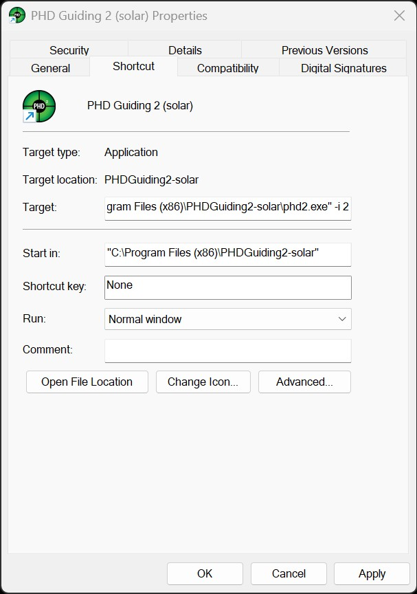

How to configure the PHD2 instance number?
How to Configure the PHD2 Instance Number?
PHD2 supports the use of instance numbers to create multiple independent configurations for equipment profiles, global settings, and user-defined parameters. Each instance functions as its own environment (or configuration space), allowing specific settings to be defined and stored for different imaging setups or scenarios.
Using different instance numbers allows multiple PHD2 instances to run in parallel, provided each instance is assigned a dedicated equipment profile. Although HelioMaker does not require more than a single instance of PHD2 to be running at a time, its primary purpose in this context is to enable users to maintain separate configurations: one for a standard PHD2 installation used for stellar guiding and deep-sky imaging, and another for planetary imaging sessions using HelioMaker alongside a custom version of PHD2.
When using HelioMaker, it is recommended to leverage PHD2 instance numbers for the following reasons:
-
Side-by-Side Installation of Custom and Standard PHD2 Versions:
HelioMaker requires a custom version of PHD2 that extends the standard version's functionality to support solar, lunar, and planetary guiding. For flexibility and stability, it is advised to install the custom version of PHD2 in a separate folder alongside the standard version.
Although the custom version is based on the latest master branch of the standard PHD2, future updates to the standard version may introduce features not yet available in the custom version. Conversely, the custom version could introduce different features or potential issues (however unlikely). Having both versions installed side by side allows switching between them as needed.
-
Independent Equipment Profiles:
Each PHD2 instance maintains its own set of equipment profiles, which can vary significantly between nighttime stellar guiding and daytime solar or planetary imaging. For example:
- Nighttime guiding: Uses settings optimized for star-based guiding, possibly including multi-star guiding. Different guiding algorithms and parameters may be configured specifically for deep-sky astrophotography.
- Daytime guiding: Focuses on solar system objects (e.g., the Sun, Moon, or planets), requiring planetary-detection settings and the advanced features provided by HelioMaker's custom PHD2 version.
-
Custom Global Settings:
Global settings (such as PHD2 window layouts and user preferences) are also instance-specific. By assigning different instance numbers to the standard and custom PHD2 versions, it is possible to maintain separate configurations and avoid conflicts when switching between different imaging workflows.
How to Configure Instance Numbers
Below are basic steps for setting up instance numbers in PHD2 and HelioMaker:
-
Optional Shortcut Setup (Custom PHD2):
If you are using a dedicated shortcut (on the desktop, taskbar, or Start menu) for the custom PHD2 version, specify the instance number using the-icommand-line option in the shortcut properties. To edit the shortcut, right-click on it and select Properties. For example:phd2.exe -i 2.
This shortcut can be useful for launching the custom PHD2 directly, but it is not mandatory. HelioMaker's Link button will automatically start the correct PHD2 version with the appropriate instance number, if properly configured. However, it is recommended to use an instance number other than 1, as this is typically associated with the standard PHD2 installation.
-
In HelioMaker:
Open the PHD2 Configuration dialog in HelioMaker. If a custom PHD2 shortcut is being used, set the same instance number here so it matches. If no custom PHD2 shortcut exists, it is still recommended to pick an instance number other than 1 to keep the custom PHD2 configuration separate from the standard installation.
Note: Creating a new instance number in PHD2 effectively starts you with a "blank slate." For this new instance, PHD2 will not have any predefined equipment profiles or saved global settings. It may also display minimal sub-windows or prompt you with a "New Profile Wizard" on first launch. You will need to set up a new equipment profile (or import an existing one) before guiding can begin.
Important Note About Custom PHD2 Installation
It is highly recommended to install the custom version of PHD2 required by HelioMaker in a separate folder from the standard PHD2 version. If the custom version is installed in the same folder, any updates to the standard PHD2 may overwrite the custom files, disabling the features that HelioMaker depends on. This ensures that both versions remain independent and can be updated without affecting each other.
Clarifying PHD2 Instance Number vs. Equipment Profile
The instance number and the equipment profile in PHD2 are common concepts used in both the standard and customized versions of PHD2. These concepts serve distinct purposes:
- Instance Number: Identifies the specific PHD2 instance HelioMaker should connect to. Each instance is assigned a unique number and maintains its own global settings and set of equipment profiles.
- Equipment Profile: A detailed configuration in PHD2 that specifies the connected equipment, including the camera, mount, and other guiding hardware, as well as the complete set of guiding parameters. These parameters may include Dark Library, Bad Pixel Map, and global PHD2 settings such as graphical window layout. Equipment profiles are unique to each instance number, but multiple profiles can be stored and managed within the same instance.
For example, when using HelioMaker alongside a standard version of PHD2 installed on the same machine, it is recommended to assign HelioMaker a distinct instance number, different from the one used by the standard PHD2 version. This approach ensures that each version maintains separate equipment profiles and global settings tailored to their respective use cases, such as day-time solar or planetary imaging with HelioMaker versus night-time stellar guiding with the standard version.
Managing PHD2 Instance Numbers
When the instance number is changed to a different value, the change takes effect only when PHD2 is launched. Upon launch, PHD2 will load all global and profile settings from the configuration space associated with the new instance number. This behavior can cause confusion and issues such as missing or mismatched equipment profiles.
To prevent such problems, it is strongly recommended to assign the instance number before creating any equipment profiles and to maintain consistency in instance number assignments when creating or editing PHD2 profiles. This approach ensures a stable and predictable operating environment.
Additionally, it is advisable to close any currently running instances of PHD2 before modifying instance numbers, either in HelioMaker's PHD2 Configuration or when editing the PHD2 shortcut in Windows. This ensures that the changes take effect properly and prevents conflicts or unexpected behavior.
Recommendations
For best results:
- Keep the standard PHD2 installation with its current instance number (1 - by default), preserving profiles and global settings for nighttime stellar guiding.
- Assign a different instance number (e.g., 2) for the custom PHD2 version required by HelioMaker.
-
Install the custom PHD2 version in a dedicated folder, such as
C:\Program Files (x86)\PHDGuiding2-solar, to ensure that subsequent updates to the standard version do not overwrite it. Similarly, when installing or updating the standard version of PHD2, make sure to install it in a different folder from where the custom PHD2 version is located. -
After assigning a new instance number to either the customized or standard PHD2 version, it is recommended to
define new equipment profiles or review existing profiles and their settings to ensure they are correctly associated
with the new instance number.
Synchronize the list of equipment profiles in PHD2 with any client software that connects to PHD2, such as HelioMaker. This can be done using the Get Profiles button in HelioMaker's PHD2 Configuration dialog.
By following these guidelines, it is possible to maintain a seamless HelioMaker workflow while preserving flexibility for various imaging scenarios.